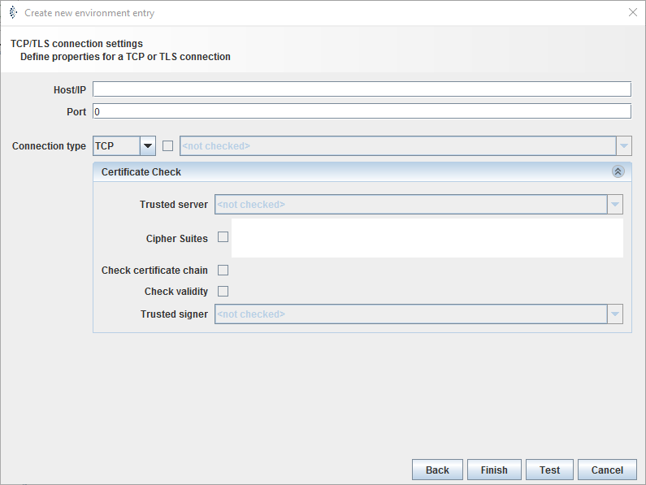

TCP/IP Connection

Topic content
Description
Environment entries of type TCP/IP connection are used to declare the parameters to gain a connection. The entry is used by Channels, which act like client and establish connections to external systems.
Purpose of object
It is used for outbound channels , e.g. MLLP Sender.
Configuration

Step by Step
1.Create an Environment entry of type TCP/IP connection.
2.Fill in the or of the intended system, e.g. localhost or 192.123.345.67.
3.Fill in the of the system, which should be accessed.
4.Select the :
oTCP: Core protocol of the Internet protocol suite.
oTLS(different versions): Cryptographic protocol to provide communication security.
oSSL: Predecessor of TLS.
5.Decide whether to use by enable the checkbox.
6.In case of :

In the combo box you need to select a Therefore create a Credential of type technical login and add a public/private keypair in pkcs#12-format.
Optionally, if you want to check server credentials, you should select a Therefore create Credentials of type trusted server and add a public key certificate.
Enforcing specific to be used in TLS is possible simply by adding comma separated values in the text box(e.g. "TLS_ECDH_RSA_WITH_AES_256_CBC_SHA,TLS_ECDHE_RSA_WITH_AES_256_CBC_SHA,TLS_DHE_RSA_WITH_AES_256_CBC_SHA").

Also, you can enforce certificate chain and validity check by selecting chain and boxes.
7.Click : An alert window will appear, which shows whether the test of the connection was successful.
8.If the test was successful. Click on .